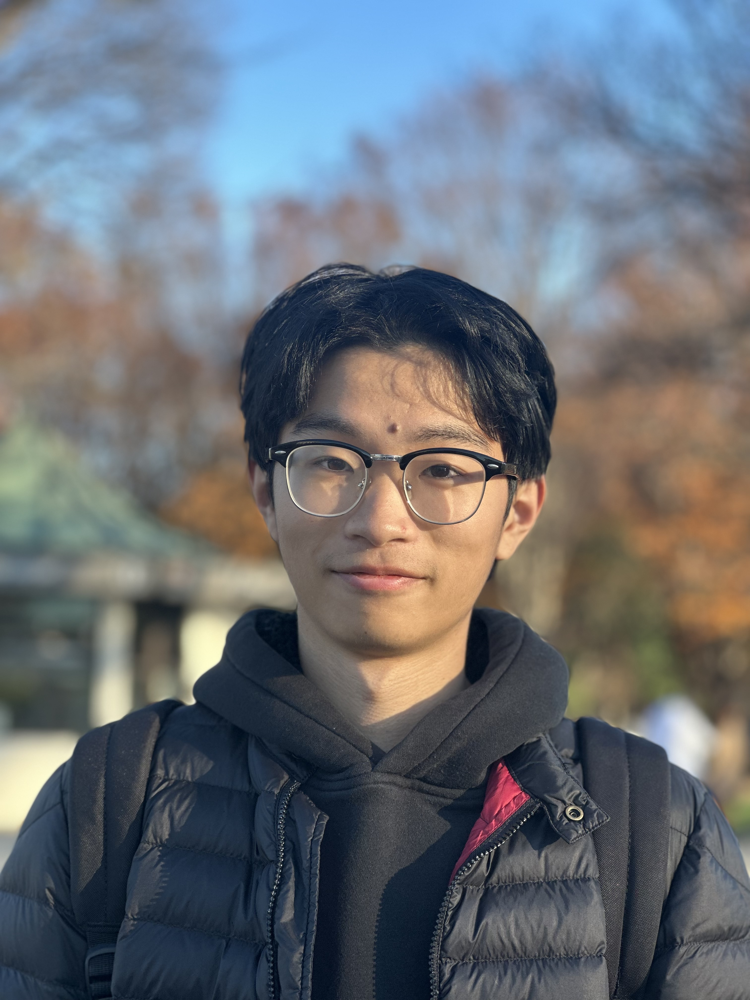
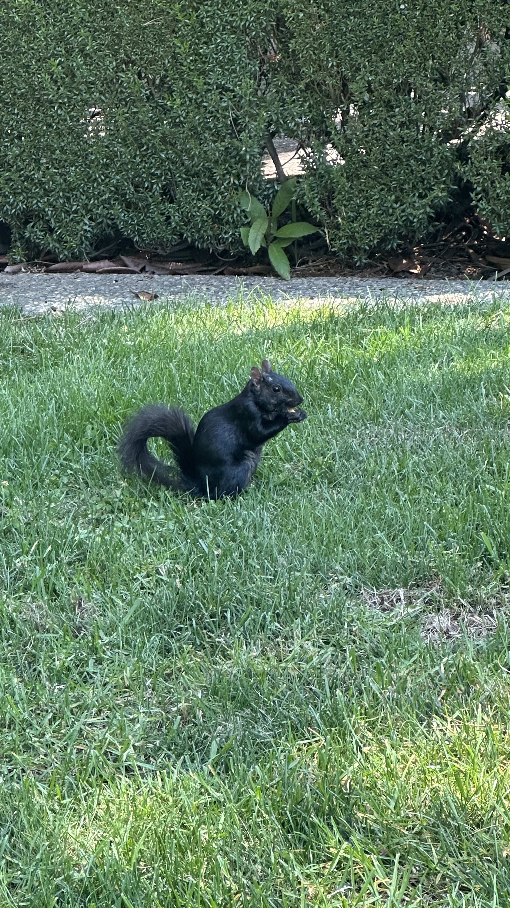
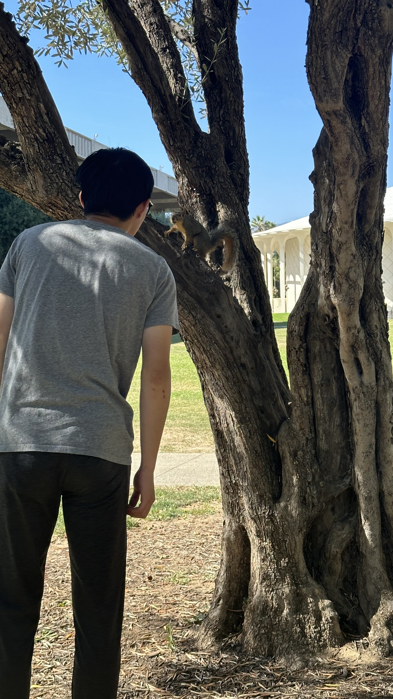
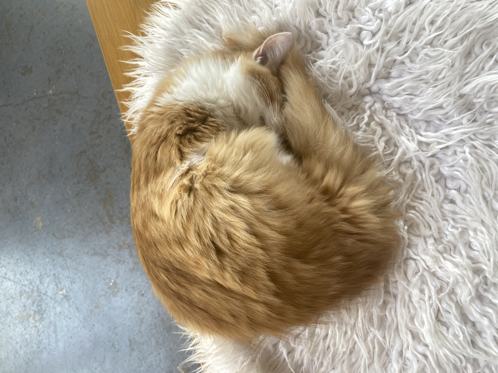

About Me
I'm a 4th Year Systems Neuroscience Major @ UCSB CCS and I study Fruit Fly.
In my free time, I watch cat videos and play video games
I also play Guitar and boulder
I observe animals including Squirrels, Cats, and Rabbits from YouTube and real life.



